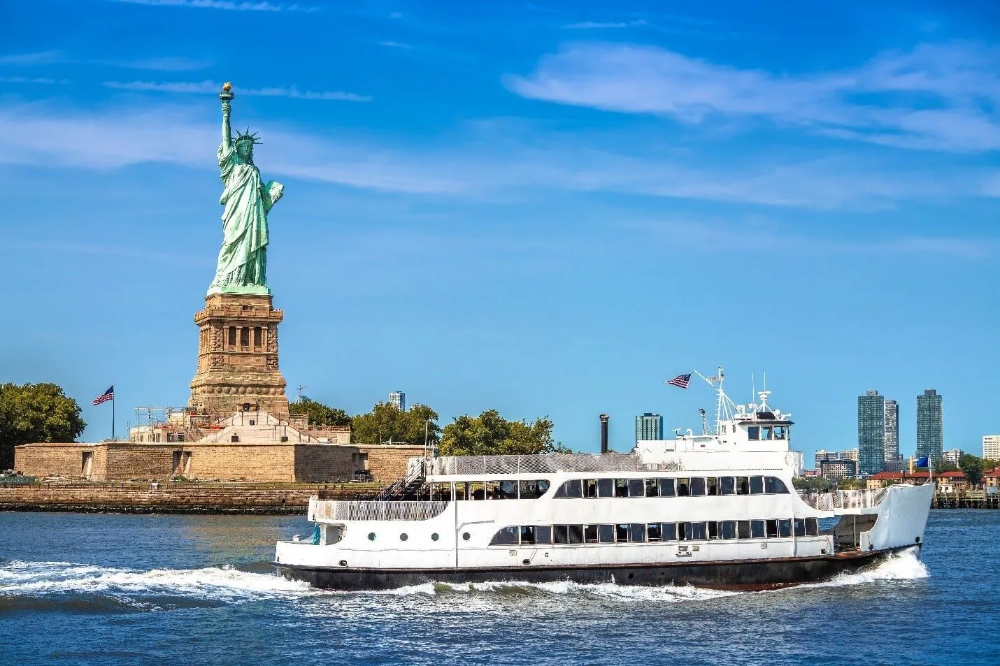
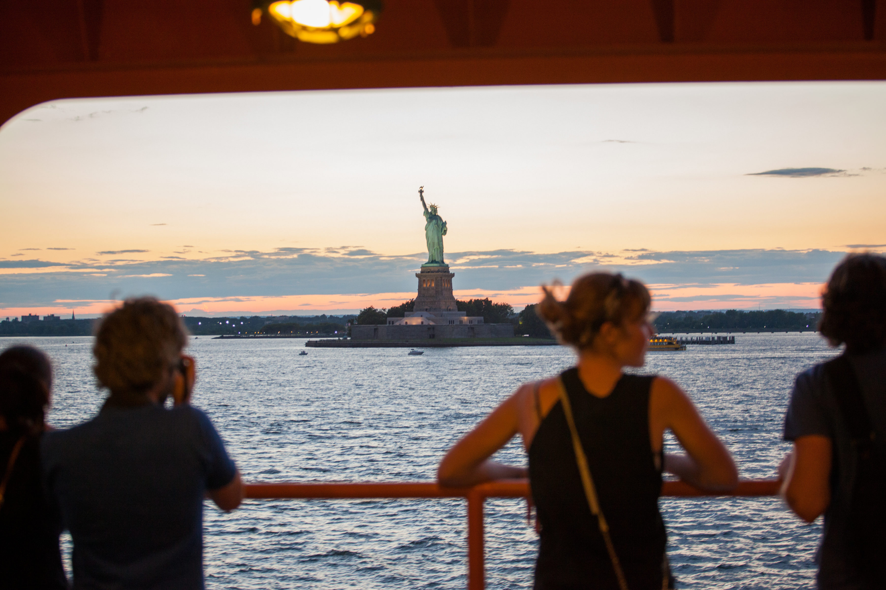
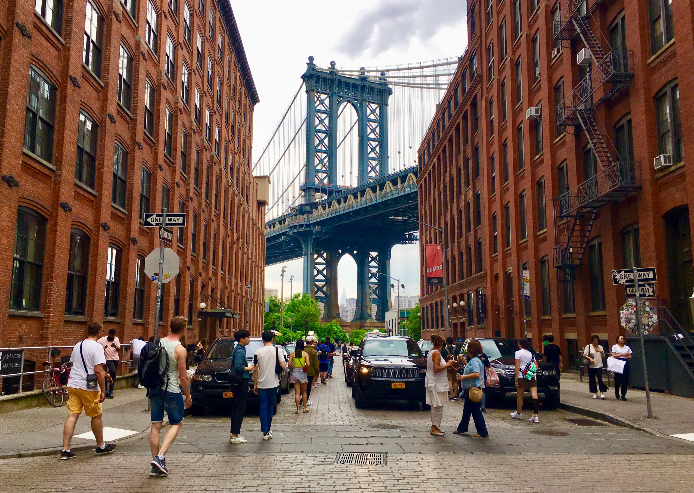
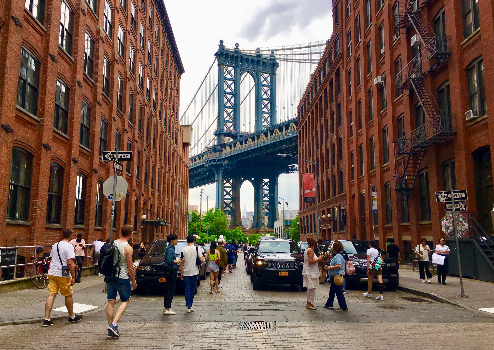
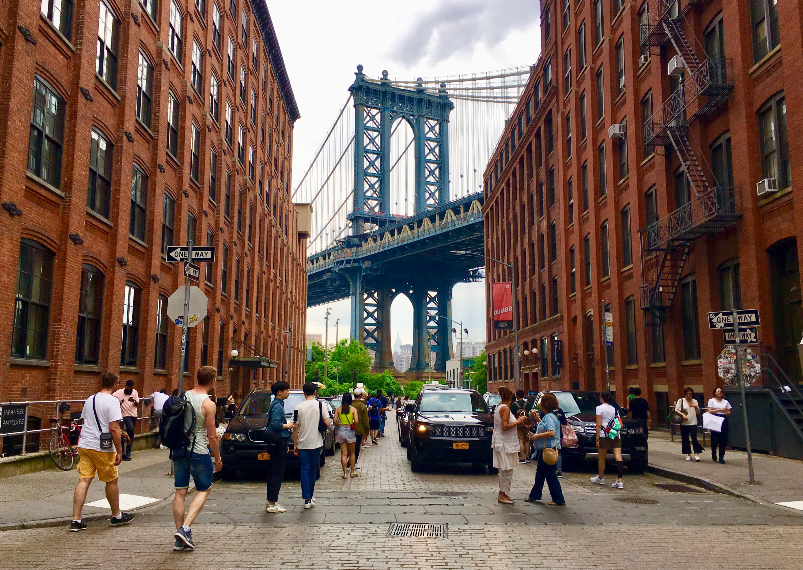
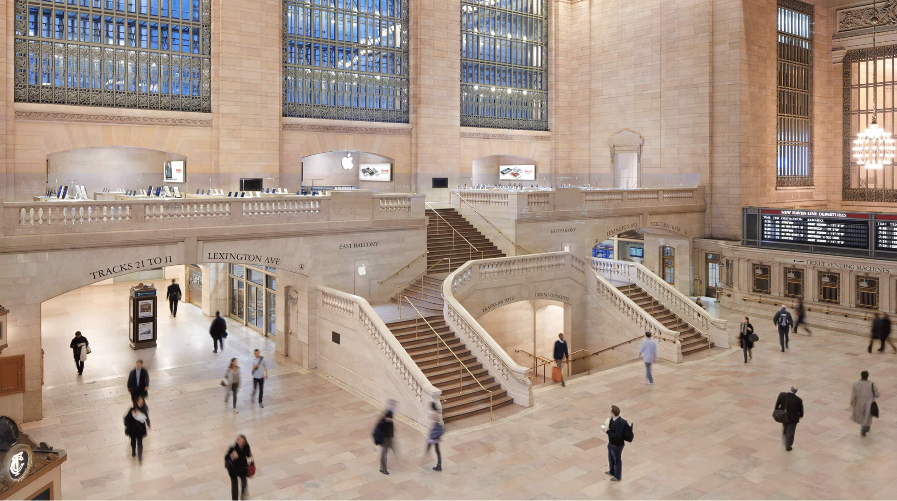
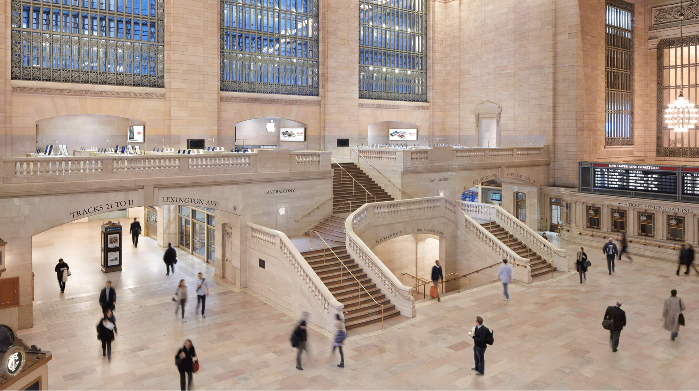
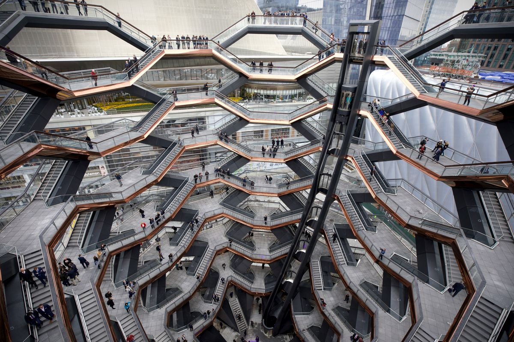
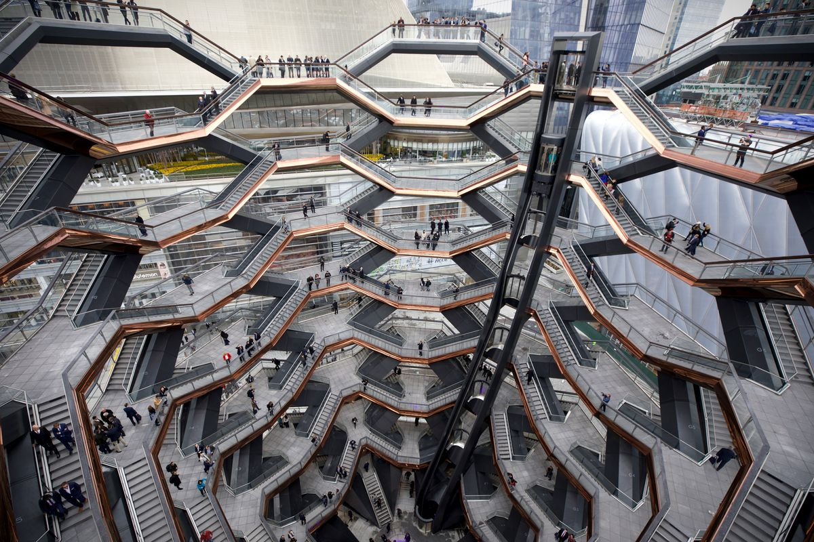

December 27 · NYC Kickoff • Big Bus • Sunset at SUMMIT
6:00 AM – 8:00 AM
Arrive at Newark (EWR) → Transfer to Manhattan → Breakfast near hotel.
9:00 AM – 9:30 AM
Activate Big Bus (Downtown Loop). 24-hour pass ~$60.
9:45 AM – 12:15 PM
🗽 Statue of Liberty (Ferry from Battery Park). Ticket ~$25–30. Allow 2–2.5 h incl. ferry and museum.



Statue of Liberty
12:25 PM – 12:45 PM
Wall Street Christmas Tree & Charging Bull (photo stop). Free.
12:50 PM – 1:20 PM
🌮 Los Tacos No. 1 (Oculus) — NYC-famous tacos (~$5 each). Quick, fresh & top-rated.
1:30 PM – 1:50 PM
Brooklyn Bridge (entrance viewpoint — optional short walk partway). Free.
2:00 PM – 2:45 PM
 

📸 DUMBO (Brooklyn) — Iconic Washington Street view; explore Brooklyn Bridge Park.

DUMBO — Washington Street
3:00 PM – 3:30 PM
🥟 Vanessa’s Dumpling House (Chinatown) — dumplings & sesame pancakes (~$5–8).
4:30 PM – 5:45 PM
🌆 SUMMIT One Vanderbilt — day → sunset → night views. Ticket ~$44–55.
6:00 PM – 6:30 PM
🎄 Rockefeller Center Tree & Rink (view free; skating ~$30–45).
6:35 PM – 7:00 PM
Bryant Park Winter Village (free to enter; skate rental ~$18–25).
7:15 PM – 9:00 PM
✨ Times Square (open 24/7). Night lights & photos before returning to hotel.

 


 
